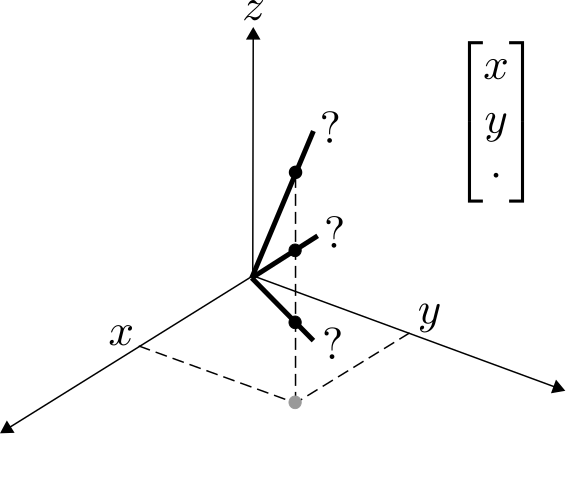

Subspaces (the generalization of lines and planes) are very useful to explain data. However, sometimes data is messy (missing data, gross errors, noise), which can complicate identifying subspaces. For example, if I give you one datapoint, you can easily find the 1-dimensional subspace S that explains it:

But if I give you one datapoint without the z coordinate, then we don't even know where the point is, and we can no longer find the subspace that explains it. In fact, there are infinitely many options:
A similar problem arises if data has grossly corrupted entries:

Daniel's research investigates how to deal with complications like this, and answer theoretical questions like: where do I need to observe my data, where can errors be, and what algorithms should I use to identify subspaces?
Sometimes one subspace is not enough, and we need a Union of Subspaces (each datapoint lies in one of several subspaces):

Sometimes even a Union is not enough. Daniel's research investigates new models that describe data, such as Mixture matrices (each entry lies in one of several subspaces):
Sometimes data cannot be described by linear structures:
Daniel's research investigates fundamental questions about these models (and others, including algebraic varieties, tensors and neural networks), such as identifiability, and how to handle messy data.
© Daniel Pimentel-Alarcón